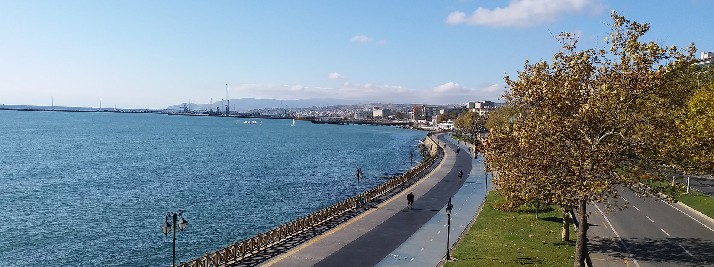
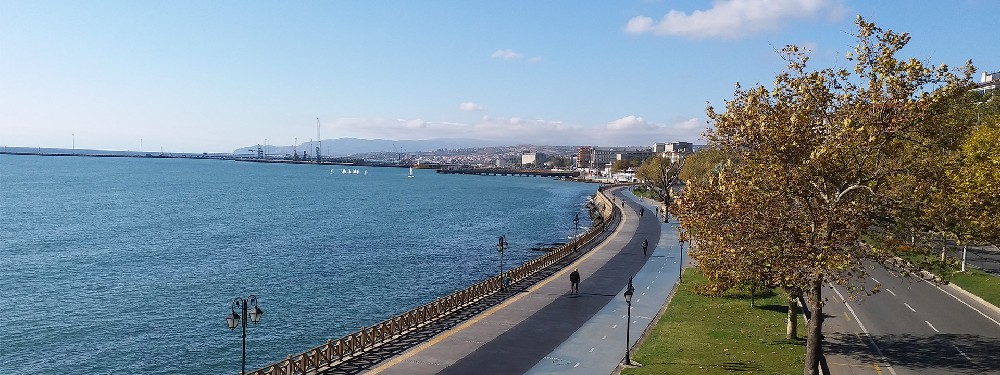
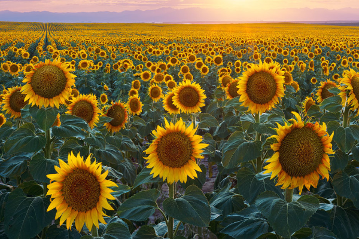
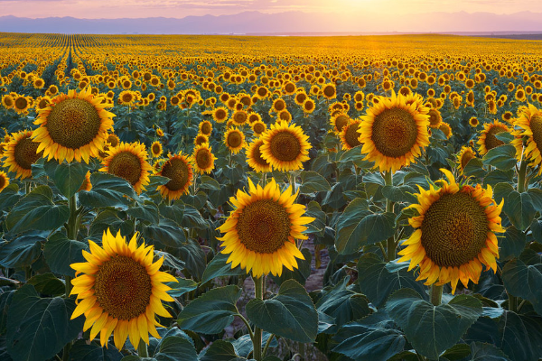

 

Rustem Pasha Complex
Rüstempaşa Mosque, which has the most prominent place in the Rüstempaşa Complex, was built by Mimar Sinan on a hill overlooking the sea in 1553 by Rüstem Pasha, the son-in-law of Suleiman the Magnificent.
When the madrasa, located 30 meters east of the mosque, was destroyed in 1880, a wooden school was built on it. This building, which was used as a high school and high school, later served as the Cumhuriyet Primary School.
Located next to the madrasah, the bath was originally built as a double bath, covered with a dome, with the men's and women's sections.
The covered bazaar, located to the west of the mosque, is a rectangular structure with 6 domes. This building, which was built from a mixture of stone and brick and was repaired in recent years, is one of the parts of the complex that can be seen as solid together with the mosque.
There is also a bazaar, the construction of which was completed in 1988, to the east of the Rüstempaşa Mosque. This bazaar, whose place belongs to the General Directorate of Foundations, was built jointly by the Special Provincial Administration and the General Directorate of Foundations. The bazaar has an architecture that reflects the period characteristics of the kulliye.
Natural Beauties
Tekirdağ province is located on the coordinates of 26o 43'- 28o 08' east longitudes 40o 36'- 410 31' north latitudes. Its coastline is 133 km to the Sea of Marmara and 2.5 km to the Black Sea, with a total of 135.5 km.
Tekirdağ, which is one of the 3 provinces of Turkey, all of which are located in the European Continent, is located on lands covered with rich alluvium in the northwest of the Marmara Sea. surrounded by Tekirdağ is a modern agricultural and industrial city with fertile lands in the south of Thrace.
The Mediterranean climate is generally dominant on the shores of the Marmara Sea. However, unlike the shores of the Mediterranean Region, snowfall can be seen in the coastal part in winter. In the inner parts of the province, the continental climate is dominant, with hot summers and cold winters.
In 2007, Tekirdağ Governor's Office was 625 m. from Yeniköy. Yeniköy - Uçmakdere region has been opened to the use of paraglider athletes, with the opening of the way to Nişantepe at high altitude and the arrangement of the seashore in Ayvasıl as a landing area.
Yeniköy - Uçmakdere region has become a known and preferred flight destination both in the region and in Turkey with its suitable features in terms of paragliding and sports tourism and the natural beauties it contains.
Tekirdağ is an important maritime city where sailing is extremely popular and trains athletes in this field. In the 1980s, Tekirdağ Sailing Specialization Club made great contributions to this sport with its facilities, events it organized, and training activities.
With the amateur maritime courses opened in the province from time to time, the love of sailing and maritime is instilled in the people of Tekirdağ and it is ensured that athletes who have devoted themselves to sailing are trained.
Agriculture
The agricultural production of Tekirdağ is much more than the animal production. Wheat is at the forefront of plant production. This product is followed by sunflower, canola, barley and silage corn, respectively.